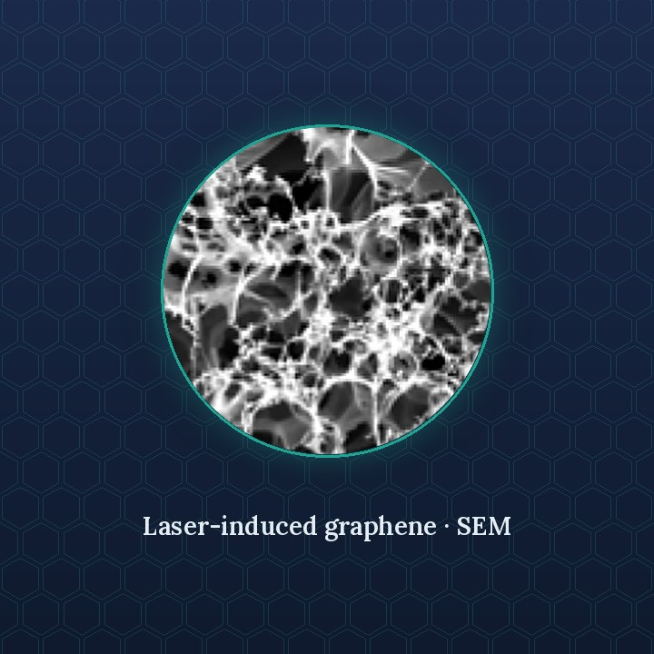

Research
One laser step, three kinds of devices
Home / Research
Research Areas
Laser-induced graphene (LIG) forms directly on a polymer when a CO₂ laser scans it in ordinary air. Because it is porous and conducts electricity, the same material can kill microbes, filter water and air, and sense what passes through it. No solvents or masks are needed, and the graphene stays on the part.

Antimicrobial & antiviral surfaces
Graphene surfaces that inactivate bacteria and viruses using low voltage, light, or both.
- Graphene-coated air filters: ~99% bacterial and 100% viral removal at ~0.3 VACS Appl. Mater. Interfaces 2021
- Graphene composite adhesive tape: up to 99.99% bacterial killing with light plus currentCarbon 2022
- LED-activated carbon nanomaterial surfaces: up to 99.1% killing in 20 minutesACS Appl. Mater. Interfaces 2026
- LIG-wrapped tri-metal organic framework and silver-doped LIG compositesAdv. Eng. Mater. 2024 · Environ. Sci.: Nano 2024

Membranes & filters
Graphene composite membranes and filter media for water treatment and air purification.
- Simple, scalable fabrication of LIG composite membranes for water treatmentACS ES&T Water 2021
- Hydrophilic silica-doped LIG with enhanced anti-adhesion performanceAdv. Mater. Interfaces 2026
- Dual-function membrane for CO₂ capture and electrocatalytic reductionChemSusChem 2025
- Membrane fouling and mitigation in wastewater treatmentIntechOpen book chapter 2024

Sensing & monitoring
Electrochemical and mechanical sensors that watch membranes and detect viruses in real time.
- Impedimetric microfluidic membrane-mimic cassette (IM³) for fouling analysisACS Appl. Mater. Interfaces 2026
- Signal stability in a porous 3D flow-through microelectrochemical biosensorSens. Actuators B 2026
- Freestanding LIG resonators for ultrasensitive viral sensingACS Appl. Mater. Interfaces 2022
- Defocused-laser anisotropic freestanding graphene architecturesACS Appl. Eng. Mater. 2026
Key Results
Graphene-coated filter felt with a steel mesh removed ~99% of P. aeruginosa and 100% of T4 virus at ~0.3 V. The filter was later commercialized.
A double-sided graphene tape: light plus current killed 99.99% of bacteria on its surface in 3 minutes.
Plasma-treated carbon nanofiber surfaces killed 99.1% of bacteria under a 23 W LED bulb in 20 minutes.
Methods & Capabilities
Laser processing & nanomaterials
Laser-induced graphene on polyimide and PES; carbon nitride and MOF synthesis; aptamer immobilization, PBASE linker chemistry and bacteriophage-based recognition.
Characterization
SEM, TEM, XRD, XPS, Raman, TGA, contact angle, ICP-MS, UV-Vis and TOC, plus antibacterial and antiviral assays and water-quality analysis.
Electrochemistry
EIS and cyclic voltammetry, equivalent-circuit fitting, distribution of relaxation times, drift and baseline-stability analysis, detection limits.
Devices & automation
Photolithography, e-beam evaporation and lift-off, microfluidic cassette assembly, 3D printing, embedded potentiostats and Python instrument control.